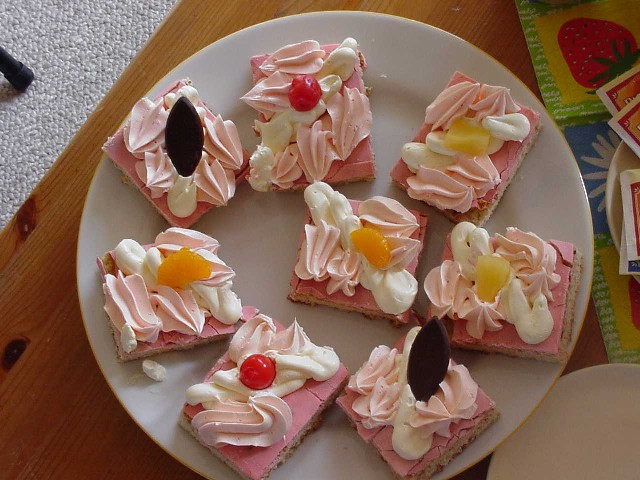

Oranjekoek

A cake filled with an almond paste and covered in pink glazing.
A traditional cake that is served on national day, birthdays or other events.
Ingredients
Dough
- 1 orange (peel grated)
- 2 teaspoons anise seeds
- 1 teaspoon nutmeg
- 1 pinch salt
- 1 egg
- 350g self-raising flour
- 200g soft white sugar
- 30g butter
- 50-100ml water
Filling
- 150g almond flour
- 150g sugar
- 1 egg
- 1/2 lemon
Glazing
- 1 table spoon berry juice
- 100g powdered sugar
Decoration
- 200ml cream
- Fruit (mandarin, pineapple, kiwi)
Steps
- In a bowl, mix the grated orange peel, anise seeds, nutmeg and salt. In another bowl, mix the egg with the self-raising flour, soft white sugar, butter and 50ml of water.
- Combine the contents of both bowls and kneed thoroughly. Add water in case the dough is too dry. Split the dough in two parts.
- Prepare the filling by mixing its ingredients. If possible, prepare this a day in advance for better taste.
- Preheat the oven at 180 degrees Celcius.
- Wrap a 21x21cm brownie tin in baking paper.
- Roll out the two parts of dough into two square shapes. Lay the first dough square in the baking tin, spread the filling over it and then cover it with the second dough square.
- Bake the cake for 30 minutes in the oven. Remove from the oven and leave to cool on a wire rack.
- Prepare the glazing by mixing the red berry juice with the powdered sugar. Alternatively water with food coloring could be used.
- Spread the glazing carefully over the cake. Tip: use a wet knife for this.
- Garnish with whipped cream and fruit.